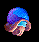
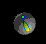
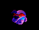
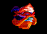
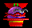
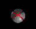

Explorar planetas: temperatura y gravedad
En algún momento querrás salir de tu planeta de origen y dedicar algún esfuerzo a explorar las estrellas cercanas en busca de otros planetas habitables. Cada planeta tiene dos características importantes: Temperatura y Gravedad.
La Temperatura representa todo lo que puedes cambiar de un sistema estelar, desde el contenido de la atmósfera hasta la ecología del planeta. Tu planeta de origen está a 72°. Cuando gastas dinero en Terraformar un planeta nuevo, su temperatura se acerca a 72°. Cuando la temperatura llega a 72°, el planeta es tan bueno como va a llegar a ser, y no podrás gastar más en Terraformar.
La Gravedad representa todo lo que no puedes cambiar de un sistema estelar, desde la emisión del sol hasta las fuerzas de marea de las lunas. Algunos lugares simplemente no son tan habitables como otros. Tu planeta de origen es de 1,00 G, y cuanto más se acerque un planeta a eso, mejor le irá a la población. Los planetas mucho mayores de 2,5 G o menores de 0,4 G nunca podrán dar beneficios y no merece la pena colonizarlos a largo plazo. Eso sí, como el metal es el bien escaso que es, no deberías dudar en colonizar un planeta inhóspito el tiempo justo para llevarte todo su metal.
Cómo colonizar planetas
En algún momento u otro encontrarás un planeta bonito y jugoso que querrás quedarte. Será algo así como 1,46 G y 198°. Tendrá 9.487 de Metal, y simplemente no podrás resistirte.
El primer paso es construir una Nave colonia de algún tipo y enviarla allí. (Si tu nivel es “Novato”, ya tendrás construida una nave colonia.) Cuando llegue, recibirás un mensaje que te avisa de que has colonizado un planeta nuevo. Dirá algo así como “Acabas de colonizar Sol. La población allí es ahora de 10”.
En este punto notarás que en tu Ventana de presupuesto se ha creado una nueva casilla con el nombre de la nueva estrella. También notarás una línea negra en esa ventana. Representa la cantidad mínima de dinero que tendrás que gastar en el nuevo planeta para mantenerlo vivo.
Un planeta tarda un tiempo en dar beneficios, aunque sea un planeta estupendo. Durante décadas irás metiéndole dinero, terraformando el planeta y viendo cómo la población crece desde el diminuto puñado con que empiezas hasta una economía próspera y rentable que contribuye a tu Imperio Galáctico. Cuanto peor sea un planeta al principio, más tardarás en hacer que dé beneficios.
Cuanto más dinero gastes en Terraformar un planeta, más rápido crecerá. Por desgracia, incluso cuando la temperatura es un perfecto 72°, probablemente seguirás sin tener allí gente suficiente para sostener de verdad todo el planeta. Ten paciencia, la población crecerá. La minería y la construcción de naves no influyen en lo rápido que crece la población.
Mantener un planeta cuesta una base de $7.500. Como tu planeta de origen solo produce unos $30.000 por turno, solo tienes dinero para colonizar cuatro planetas a la vez. Como mucho. Probablemente querrás colonizar solo uno, al menos hasta que doble la esquina de la rentabilidad. Si no, acabas gastando todo tu dinero solo en mantener vivos a tus habitantes, y te queda poco para mejorar los planetas, construir naves e investigar tecnología nueva.
Es bueno tener muchos planetas colonizados. Cuantos más planetas rentables tengas, más dinero ganas. Cuanto más dinero ganas, más puedes gastar en investigación. Cuanto más alta es tu tecnología, menos probable es que un enemigo te arrolle, suponiendo que hayas construido naves con esa tecnología más alta. Además, si tienes muchos planetas, puedes permitirte que las naves enemigas pisoteen uno o dos.
Notarás que todas tus colonias parecen buenas. Es decir, no llevan máscara, ni gafas de sol oscuras, ni crestas, ni pendientes. Es sencillo: a ti te toca llevar el sombrero blanco. Claro que todos los demás jugadores también se creen los buenos.
Cómo exprimir un planeta
A veces te quedarás corto de metal. En ese caso, suele ser buena idea colonizar un planeta que sabes perfectamente que nunca podrá dar beneficios, por mucho que lo terraformes y por mucho que esperes. Quizá sea de 3,5 G, o incluso peor. Lo que haces entonces es colonizar el planeta, pero ajustar su gasto para no gastar nada en Terraformar y gastar poco o nada en construcción de naves. Gástalo todo en Minas. Recuerda gastar bastante por encima de la línea negra de la Ventana de presupuesto, porque ese es el dinero disponible para Minas; todo lo que llega hasta la línea se va simplemente en mantener la colonia.
Cuando hayas sacado del planeta todo el metal que quieras, deja de gastar dinero en él. Los Satélites que hayas construido allí se quedarán, pero tus colonos serán evacuados.
A veces puede que quieras explotar a fondo un planeta solo para que un enemigo no se lleve su metal.
Cómo matar planetas enemigos
Si envías una flota a un planeta que un enemigo ha colonizado, y tu flota destruye las naves y los satélites enemigos, seguirá machacando el propio planeta, matando a la población a mansalva. El planeta puede ofrecer una resistencia feroz, pero lo más probable es que solo baste para defenderse de fuerzas exploratorias. Contra una flota de invasión, lo normal es que la población del planeta quede totalmente eliminada. El enemigo dejará de ser el dueño del planeta. Serás libre de colonizarlo o de hacer con él lo que quieras. Claro que el enemigo puede enfadarse e intentar recuperarlo, así que conviene ser precavido.
Distintas imágenes de planetas
Cada tipo de planeta tiene un aspecto propio. Esta sección es más o menos un glosario de imágenes de planetas.
Un planeta colonizado y rentable
Es un planeta donde has establecido una colonia y la has mantenido el tiempo suficiente para que la población crezca hasta el punto de poder mantenerse sola. Incluso puede aportar dinero para tu esfuerzo interestelar. En color, será gordo, verde y azul. Tu planeta de origen es así.
El PDF original no tiene ninguna imagen bajo este encabezado.
Un planeta colonizado y potencialmente rentable

Un planeta de esta categoría da pérdidas por el momento (es decir, tienes que meterle dinero para mantenerlo vivo), pero con tiempo y esfuerzo suficientes podría ser rentable algún día. En color, será azul brillante. Para hacerlo rentable, tendrás que terraformarlo hasta acercarlo a 72° y dar tiempo a que crezca la población.
Un planeta colonizado e inhóspito
Un planeta con una gravedad superior a 2,5 G o inferior a 0,4 G será prácticamente imposible de hacer rentable, por mucho que lo terraformes o por mucho que esperes. Sin embargo, en raras ocasiones puede ser buena idea conservar un planeta así por razones estratégicas. El resto del tiempo, saca todo el Metal que tenga y abandónalo: no te molestes en terraformarlo. Lo que hacemos nosotros es sacarle todo el metal, construir un satélite que vigile el planeta y luego abandonar la colonia (sin gastar dinero en ella).
El PDF original no tiene ninguna imagen bajo este encabezado.
Un planeta colonizado, inhóspito y agotado por la minería
Este tipo de planeta no solo nunca dará beneficios, sino que ni siquiera tiene metal que extraer. ¡Puaj! A menos que tenga alguna importancia estratégica o temes que haya allí una base enemiga, deja en paz esta basura.
Un planeta sin explorar

Es un planeta en el que nunca has estado.
Un planeta que pronto será explorado

Si envías una flota a un planeta sin explorar, el signo de interrogación se convertirá en uno de exclamación, para avisarte de que pronto sabrás más. Esto hace cómodo explorar un montón de planetas en un turno, porque es fácil ver a cuáles estás enviando naves.
Un planeta explorado y habitable
Es un planeta que has explorado hace poco, pero en el que no has establecido una colonia. Cualquier planeta con un punto al lado tiene al menos una flota allí. No es mala idea dejar flotas en los planetas que has explorado solo para vigilarlos.
Una colonia de explotación minera
Es un planeta que has colonizado, pero cuya gravedad no es lo bastante buena para llegar a ser rentable. No debes molestarte en terraformar estas colonias.
Un planeta enemigo



Cualquier planeta en el que pierdas una batalla se convierte en un planeta enemigo. A veces no habrá allí naves ni gente enemigas, como cuando un enemigo llega, te mata y se va. A veces habrá una armada enorme.
Ten en cuenta que un planeta se mostrará como “enemigo” hasta que envíes otra flota allí y ganes una batalla; de hecho, puede que envíes una flota a un planeta enemigo y no encuentres a nadie. Toda la información que tienes sobre los planetas se basa en la última vez que estuviste allí. Si hace mucho que estuviste en un planeta, la información sobre él puede ser inexacta.
Los planetas enemigos tienen el aspecto de toda clase de malos. Cada jugador enemigo tendrá su propio aspecto, para que sepas con quién luchas y dónde.
Un planeta casi explorado

De vez en cuando enviarás una flota a una estrella en la que nunca has estado y te encontrarás con una flota enemiga de fuerza parecida a la tuya. Si esa batalla acaba en empate, obtendrás este curioso icono que te recuerda que todavía no has explorado el planeta, pero que sabes que hay malos cerca.
Satélites en un planeta
Si pones satélites en un planeta, ese planeta tendrá un círculo alrededor en el mapa estelar para indicarte que está defendido.
Flotas en un planeta
Si tienes una flota en un planeta, aparecerá una pequeña imagen de una flota en la esquina superior derecha del planeta para avisarte. Ya sabemos que parece una luna, pero no te dejes engañar.
Traducción al español del remake, no oficial, del manual de Delta Tao. La página en inglés (en inglés).